Hystrix：Spring Cloud服务熔断与降级组件（非常详细）
在微服务架构中，一个应用往往由多个服务组成，这些服务之间相互依赖，依赖关系错综复杂。
例如一个微服务系统中存在 A、B、C、D、E、F 等多个服务，它们的依赖关系如下图。

通常情况下，一个用户请求往往需要多个服务配合才能完成。如图 1 所示，在所有服务都处于可用状态时，请求 1 需要调用 A、D、E、F 四个服务才能完成，请求 2 需要调用 B、E、D 三个服务才能完成，请求 3 需要调用服务 C、F、E、D 四个服务才能完成。
当服务 E 发生故障或网络延迟时，会出现以下情况：
从以上过程可以看出，当微服务系统的一个服务出现故障时，故障会沿着服务的调用链路在系统中疯狂蔓延，最终导致整个微服务系统的瘫痪，这就是“雪崩效应”。为了防止此类事件的发生，微服务架构引入了“熔断器”的一系列服务容错和保护机制。
在微服务领域，熔断器最早是由 Martin Fowler 在他发表的 《Circuit Breaker》一文中提出。与物理学中的熔断器作用相似，微服务架构中的熔断器能够在某个服务发生故障后，向服务调用方返回一个符合预期的、可处理的降级响应（FallBack），而不是长时间的等待或者抛出调用方无法处理的异常。这样就保证了服务调用方的线程不会被长时间、不必要地占用，避免故障在微服务系统中的蔓延，防止系统雪崩效应的发生。
Spring Cloud Hystrix 是基于 Netflix 公司的开源组件 Hystrix 实现的，它提供了熔断器功能，能够有效地阻止分布式微服务系统中出现联动故障，以提高微服务系统的弹性。Spring Cloud Hystrix 具有服务降级、服务熔断、线程隔离、请求缓存、请求合并以及实时故障监控等强大功能。
服务降级的使用场景有以下 2 种：
我们可以通过重写 HystrixCommand 的 getFallBack() 方法或 HystrixObservableCommand 的 resumeWithFallback() 方法，使服务支持服务降级。
Hystrix 服务降级 FallBack 既可以放在服务端进行，也可以放在客户端进行。
Hystrix 会在以下场景下进行服务降级处理：
2. 在类路径（即 /resources 目录）下添加一个配置文件 application.yml，配置内容如下。
3. 在 net.biancheng.c.service 包下创建一个名为 DeptService 的接口，代码如下。
4. 在 net.biancheng.c.service.impl 包下，创建 DeptService 接口的实现类 DeptServiceImpl，代码如下。
我们可以看到 deptInfo_Timeout() 方法上使用 @HystrixCommand 注解，该注解说明如下：
5. 在 net.biancheng.c.controller 包下创建一个名为 DeptController 的 Controller 类，代码如下。
6. 在 micro-service-cloud-provider-dept-hystrix-8004 的主启动类上，使用 @EnableCircuitBreaker 注解开启熔断器功能，代码如下。
7. 依次启动服务注册中心（Eureka Server）集群和 micro-service-cloud-provider-dept-hystrix-8004，并使用浏览器访问“http://eureka7001.com:8004/dept/hystrix/ok/1”，结果如下图。
8. 使用浏览器访问“http://eureka7001.com:8004/dept/hystrix/timeout/1”，结果如下图。
客户端服务降级步骤如下。
1. 在 micro-service-cloud-consumer-dept-feign 的 pom.xml 中添加 Hystrix 的依赖，代码如下。
2. 在 micro-service-cloud-consumer-dept-feign 的 application.yml 中添加以下配置，开启客户端的 Hystrix 功能。
3. 在 net.biancheng.c.service 包下，创建一个名为 DeptHystrixService 的服务绑定接口，与 micro-service-cloud-provider-dept-hystrix-8004 中提供的服务接口进行绑定，代码如下。
4. 在 net.biancheng.c.controller 包下创建一个名为 HystrixController_Consumer 的 Controller ，代码如下。
5. 在配置文件 appliction.yml 中添加以下配置，在客户端配置请求超时的时间。
在配置文件中设计请求的超时时间时，需要注意以下 2 点：
1）Hystrix 可以来为所有请求（方法）设置超时时间（单位为毫秒），若请求超时则触发全局的回退方法进行处理。
2）Hystrix 还可以为某个特定的服务请求（方法）设置超时时间，格式如下：
6. 在 micro-service-cloud-consumer-dept-feign 的主启动类上，使用 @EnableHystrix 注解开启客户端 Hystrix 功能，代码如下。
7. 修改 micro-service-cloud-provider-dept-hystrix-8004 中 DeptServiceImpl 的代码，将 deptInfo_Timeout() 方法的运行时间修改为 4 秒（小于超时时间 5 秒），以保证服务端请求正常不被降级，代码如下。
8. 重启 micro-service-cloud-provider-dept-hystrix-8004 和 micro-service-cloud-consumer-dept-feign，使用浏览器访问“http://eureka7001.com:8004/dept/hystrix/timeout/1”，直接调用服务端的 deptInfo_Timeout() 方法，结果如下图。
9. 使用浏览器访问“http://eureka7001.com/consumer/dept/hystrix/timeout/1”，结果如下图。
由图 5 可以看出，由于服务请求的耗时为 4 秒，超过了客户端为该请求指定的超时时间 （3 秒 ），因此该服务被降级处理，触发了其指定的回退方法。
1. 在 HystrixController_Consumer 的类名上标注 @DefaultProperties 注解，并通过其 defaultFallback 属性指定一个全局的降级方法，代码如下。
2. 在 HystrixController_Consumer 中，创建一个名为 dept_Global_FallbackMethod 的全局回方法，代码如下。
下面我们对业务逻辑与降级逻辑进行解耦，操作步骤如下。
1. 在 micro-service-cloud-consumer-dept-feign 的 net.biancheng.c.service 包下，新建 DeptHystrixService 接口的实现类 DeptHystrixFallBackService，统一为 DeptHystrixService 中的方法提供服务降级处理 ，代码如下。
3. 重启 micro-service-cloud-consumer-dept-feign，然后关闭服务端 micro-service-cloud-provider-dept-hystrix-8004，使用浏览器访问“http://eureka7001.com/consumer/dept/hystrix/ok/1”，结果如下图。
当微服务系统中的某个微服务不可用或响应时间太长时，为了保护系统的整体可用性，熔断器会暂时切断请求对该服务的调用，并快速返回一个友好的错误响应。这种熔断状态不是永久的，在经历了一定的时间后，熔断器会再次检测该微服务是否恢复正常，若服务恢复正常则恢复其调用链路。
三种熔断状态之间的转化关系如下图：

图8：三种熔断状态转换
Hystrix 实现服务熔断的步骤如下：
1. 在 micro-service-cloud-provider-dept-hystrix-8004 中的 DeptService 接口中添加一个 deptCircuitBreaker() 方法，代码如下。
2. 在 DeptService 接口的实现类 DeptServiceImpl 添加 deptCircuitBreaker() 的方法实现及其回退方法，代码如下。
在以上代码中，共涉及到了 4 个与 Hystrix 熔断机制相关的重要参数，这 4 个参数的含义如下表。
3. 在 DeptController 中添加一个 deptCircuitBreaker() 方法对外提供服务，代码如下。
4. 重启 micro-service-cloud-provider-dept-hystrix-8004，使用浏览器访问“http://eureka7001.com:8004/dept/hystrix/circuit/1”，结果如下图。

图9：Hystrix 实现熔断机制 调用正确示例
5. 浏览器多次（调用次数大于请求总数阀值）访问“http://eureka7001.com:8004/dept/hystrix/circuit/-2”，使调用出错率大于错误百分比阀值，结果下图。
6. 重新将参数修改为正数（例如参数为 3），使用浏览器访问“http://eureka7001.com:8004/dept/hystrix/circuit/3”，结果如下图。
通过图 11 可以看到，在熔断开启状态下，即使我们传入的参数已经是正数，调用的依然降级逻辑。
7. 继续连续访问“http://eureka7001.com:8004/dept/hystrix/circuit/3”，结果下图。
通过图 12 可以看出，当服务调用正确率上升到一定的利率后，Hystrix 进入熔断关闭状态。
下面我们就通过一个实例来搭建 Hystrix Dashboard，监控 micro-service-cloud-provider-dept-hystrix-8004 的运行情况。
1. 在父工程下新建一个名为 micro-service-cloud-consumer-dept-hystrix-dashboard-9002 的子模块，并在其 pom.xml 中添加以下依赖。
2. 在 micro-service-cloud-consumer-dept-hystrix-dashboard-9002 的 application.yml 中添加以下配置。
3. 在 micro-service-cloud-consumer-dept-hystrix-dashboard-9002 的主启动类上添加 @EnableHystrixDashboard 注解，开启 Hystrix 监控功能，代码如下。
4. 在 micro-service-cloud-provider-dept-hystrix-8004 的 net.biancheng.c.config 包下，创建一个名为 HystrixDashboardConfig 的配置类，代码如下。
5. 启动 micro-service-cloud-consumer-dept-hystrix-dashboard-9002，使用浏览器访问“http://eureka7001.com:9002/hystrix”，结果如下图。
6. 重启 micro-service-cloud-provider-dept-hystrix-8004，并将以下信息填到 Hystrix 监控页面中，如下图。
7. 点击下方的 Monitor Stream 按钮，跳转到 Hystrix 对 micro-service-cloud-provider-dept-hystrix-8004 的监控页面，如下图。
8. 使用浏览器多次访问“http://eureka7001.com:8004/dept/hystrix/circuit/1”和 “http://eureka7001.com:8004/dept/hystrix/circuit/-1”，查看 Hystrix 监控页面，如下图。
例如一个微服务系统中存在 A、B、C、D、E、F 等多个服务，它们的依赖关系如下图。
图1：服务依赖关系
通常情况下，一个用户请求往往需要多个服务配合才能完成。如图 1 所示，在所有服务都处于可用状态时，请求 1 需要调用 A、D、E、F 四个服务才能完成，请求 2 需要调用 B、E、D 三个服务才能完成，请求 3 需要调用服务 C、F、E、D 四个服务才能完成。
当服务 E 发生故障或网络延迟时，会出现以下情况：
- 即使其他所有服务都可用，由于服务 E 的不可用，那么用户请求 1、2、3 都会处于阻塞状态，等待服务 E 的响应。在高并发的场景下，会导致整个服务器的线程资源在短时间内迅速消耗殆尽。
- 所有依赖于服务 E 的其他服务，例如服务 B、D 以及 F 也都会处于线程阻塞状态，等待服务 E 的响应，导致这些服务的不可用。
- 所有依赖服务B、D 和 F 的服务，例如服务 A 和服务 C 也会处于线程阻塞状态，以等待服务 D 和服务 F 的响应，导致服务 A 和服务 C 也不可用。
从以上过程可以看出，当微服务系统的一个服务出现故障时，故障会沿着服务的调用链路在系统中疯狂蔓延，最终导致整个微服务系统的瘫痪，这就是“雪崩效应”。为了防止此类事件的发生，微服务架构引入了“熔断器”的一系列服务容错和保护机制。
熔断器
熔断器（Circuit Breaker）一词来源物理学中的电路知识，它的作用是当线路出现故障时，迅速切断电源以保护电路的安全。在微服务领域，熔断器最早是由 Martin Fowler 在他发表的 《Circuit Breaker》一文中提出。与物理学中的熔断器作用相似，微服务架构中的熔断器能够在某个服务发生故障后，向服务调用方返回一个符合预期的、可处理的降级响应（FallBack），而不是长时间的等待或者抛出调用方无法处理的异常。这样就保证了服务调用方的线程不会被长时间、不必要地占用，避免故障在微服务系统中的蔓延，防止系统雪崩效应的发生。
Spring Cloud Hystrix
Spring Cloud Hystrix 是一款优秀的服务容错与保护组件，也是 Spring Cloud 中最重要的组件之一。Spring Cloud Hystrix 是基于 Netflix 公司的开源组件 Hystrix 实现的，它提供了熔断器功能，能够有效地阻止分布式微服务系统中出现联动故障，以提高微服务系统的弹性。Spring Cloud Hystrix 具有服务降级、服务熔断、线程隔离、请求缓存、请求合并以及实时故障监控等强大功能。
在微服务系统中，Hystrix 能够帮助我们实现以下目标：Hystrix [hɪst'rɪks]，中文含义是豪猪，豪猪的背上长满了棘刺，使它拥有了强大的自我保护能力。而 Spring Cloud Hystrix 作为一个服务容错与保护组件，也可以让服务拥有自我保护的能力，因此也有人将其戏称为“豪猪哥”。
- 保护线程资源：防止单个服务的故障耗尽系统中的所有线程资源。
- 快速失败机制：当某个服务发生了故障，不让服务调用方一直等待，而是直接返回请求失败。
- 提供降级（FallBack）方案：在请求失败后，提供一个设计好的降级方案，通常是一个兜底方法，当请求失败后即调用该方法。
- 防止故障扩散：使用熔断机制，防止故障扩散到其他服务。
- 监控功能：提供熔断器故障监控组件 Hystrix Dashboard，随时监控熔断器的状态。
Hystrix 服务降级
Hystrix 提供了服务降级功能，能够保证当前服务不受其他服务故障的影响，提高服务的健壮性。服务降级的使用场景有以下 2 种：
- 在服务器压力剧增时，根据实际业务情况及流量，对一些不重要、不紧急的服务进行有策略地不处理或简单处理，从而释放服务器资源以保证核心服务正常运作。
- 当某些服务不可用时，为了避免长时间等待造成服务卡顿或雪崩效应，而主动执行备用的降级逻辑立刻返回一个友好的提示，以保障主体业务不受影响。
我们可以通过重写 HystrixCommand 的 getFallBack() 方法或 HystrixObservableCommand 的 resumeWithFallback() 方法，使服务支持服务降级。
Hystrix 服务降级 FallBack 既可以放在服务端进行，也可以放在客户端进行。
Hystrix 会在以下场景下进行服务降级处理：
- 程序运行异常
- 服务超时
- 熔断器处于打开状态
- 线程池资源耗尽
示例1
下面我们就通过一个案例，分别演示下 Hystrix 服务端服务降级和客户端服务降级。服务端服务降级
1. 在主工程 spring-cloud-demo2 下创建一个名为 micro-service-cloud-provider-dept-hystrix-8004 的服务提供者，并在其 pom.xml 中添加以下依赖。
<?xml version="1.0" encoding="UTF-8"?>
<project xmlns="http://maven.apache.org/POM/4.0.0" xmlns:xsi="http://www.w3.org/2001/XMLSchema-instance"
xsi:schemaLocation="http://maven.apache.org/POM/4.0.0 https://maven.apache.org/xsd/maven-4.0.0.xsd">
<modelVersion>4.0.0</modelVersion>
<!--父pom-->
<parent>
<artifactId>spring-cloud-demo2</artifactId>
<groupId>net.biancheng.c</groupId>
<version>0.0.1-SNAPSHOT</version>
</parent>
<groupId>net.biancheng.c</groupId>
<artifactId>micro-service-cloud-provider-dept-hystrix-8004</artifactId>
<version>0.0.1-SNAPSHOT</version>
<name>micro-service-cloud-provider-dept-hystrix-8004</name>
<description>Demo project for Spring Boot</description>
<properties>
<java.version>1.8</java.version>
</properties>
<dependencies>
<dependency>
<groupId>org.springframework.boot</groupId>
<artifactId>spring-boot-starter-web</artifactId>
</dependency>
<dependency>
<groupId>org.springframework.boot</groupId>
<artifactId>spring-boot-devtools</artifactId>
<scope>runtime</scope>
<optional>true</optional>
</dependency>
<dependency>
<groupId>org.projectlombok</groupId>
<artifactId>lombok</artifactId>
<optional>true</optional>
</dependency>
<dependency>
<groupId>org.springframework.boot</groupId>
<artifactId>spring-boot-starter-test</artifactId>
<scope>test</scope>
</dependency>
<!--添加 Spring Boot 的监控模块-->
<dependency>
<groupId>org.springframework.boot</groupId>
<artifactId>spring-boot-starter-actuator</artifactId>
</dependency>
<!-- eureka 客户端-->
<dependency>
<groupId>org.springframework.cloud</groupId>
<artifactId>spring-cloud-starter-netflix-eureka-client</artifactId>
</dependency>
<!--hystrix 依赖-->
<dependency>
<groupId>org.springframework.cloud</groupId>
<artifactId>spring-cloud-starter-netflix-hystrix</artifactId>
</dependency>
</dependencies>
<build>
<plugins>
<plugin>
<groupId>org.springframework.boot</groupId>
<artifactId>spring-boot-maven-plugin</artifactId>
<configuration>
<excludes>
<exclude>
<groupId>org.projectlombok</groupId>
<artifactId>lombok</artifactId>
</exclude>
</excludes>
</configuration>
</plugin>
</plugins>
</build>
</project>
2. 在类路径（即 /resources 目录）下添加一个配置文件 application.yml，配置内容如下。
spring:
application:
name: microServiceCloudProviderDeptHystrix #微服务名称，对外暴漏的微服务名称，十分重要
server:
port: 8004
########################################### Spring cloud 自定义服务名称和 ip 地址###############################################
eureka:
client: #将客户端注册到 eureka 服务列表内
service-url:
#defaultZone: http://eureka7001:7001/eureka #这个地址是 7001注册中心在 application.yml 中暴露出来额注册地址 （单机版）
defaultZone: http://eureka7001.com:7001/eureka/,http://eureka7002.com:7002/eureka/,http://eureka7003.com:7003/eureka/ #将服务注册到 Eureka 集群
instance:
instance-id: spring-cloud-provider-8004 #自定义服务名称信息
prefer-ip-address: true #显示访问路径的 ip 地址
#####################spring cloud 使用 Spring Boot actuator 监控完善信息###########################################
# Spring Boot 2.50对 actuator 监控屏蔽了大多数的节点，只暴露了 heath 节点，本段配置（*）就是为了开启所有的节点
management:
endpoints:
web:
exposure:
include: "*" # * 在yaml 文件属于关键字，所以需要加引号
info:
app.name: micro-service-cloud-provider-dept-hystrix
company.name: c.biancheng.net
build.aetifactId: @project.artifactId@
build.version: @project.version@
3. 在 net.biancheng.c.service 包下创建一个名为 DeptService 的接口，代码如下。
package net.biancheng.c.service;
public interface DeptService {
// hystrix 熔断器示例 ok
public String deptInfo_Ok(Integer id);
//hystrix 熔断器超时案例
public String deptInfo_Timeout(Integer id);
}
4. 在 net.biancheng.c.service.impl 包下，创建 DeptService 接口的实现类 DeptServiceImpl，代码如下。
package net.biancheng.c.service.impl;
import com.netflix.hystrix.contrib.javanica.annotation.HystrixCommand;
import com.netflix.hystrix.contrib.javanica.annotation.HystrixProperty;
import net.biancheng.c.service.DeptService;
import org.springframework.stereotype.Service;
import java.util.concurrent.TimeUnit;
@Service("deptService")
public class DeptServiceImpl implements DeptService {
@Override
public String deptInfo_Ok(Integer id) {
return "线程池：" + Thread.currentThread().getName() + " deptInfo_Ok,id: " + id;
}
//一旦该方法失败并抛出了异常信息后，会自动调用 @HystrixCommand 注解标注的 fallbackMethod 指定的方法
@HystrixCommand(fallbackMethod = "dept_TimeoutHandler",
commandProperties =
//规定 5 秒钟以内就不报错，正常运行，超过 5 秒就报错，调用指定的方法
{@HystrixProperty(name = "execution.isolation.thread.timeoutInMilliseconds", value = "5000")})
@Override
public String deptInfo_Timeout(Integer id) {
int outTime = 6;
try {
TimeUnit.SECONDS.sleep(outTime);
} catch (InterruptedException e) {
e.printStackTrace();
}
return "线程池：" + Thread.currentThread().getName() + " deptInfo_Timeout,id: " + id + " 耗时: " + outTime;
}
// 当服务出现故障后，调用该方法给出友好提示
public String dept_TimeoutHandler(Integer id) {
return "C语言中文网提醒您，系统繁忙请稍后再试！"+"线程池：" + Thread.currentThread().getName() + " deptInfo_Timeout,id: " + id;
}
}
我们可以看到 deptInfo_Timeout() 方法上使用 @HystrixCommand 注解，该注解说明如下：
- 参数 fallbackMethod 属性用于指定降级方法。
- 参数 execution.isolation.thread.timeoutInMilliseconds 用于设置自身调用超时时间的峰值，峰值内可以正常运行，否则执行降级方法
5. 在 net.biancheng.c.controller 包下创建一个名为 DeptController 的 Controller 类，代码如下。
package net.biancheng.c.controller;
import lombok.extern.slf4j.Slf4j;
import net.biancheng.c.service.DeptService;
import org.springframework.beans.factory.annotation.Autowired;
import org.springframework.beans.factory.annotation.Value;
import org.springframework.web.bind.annotation.*;
@RestController
@Slf4j
public class DeptController {
@Autowired
private DeptService deptService;
@Value("${server.port}")
private String serverPort;
@RequestMapping(value = "/dept/hystrix/ok/{id}")
public String deptInfo_Ok(@PathVariable("id") Integer id) {
String result = deptService.deptInfo_Ok(id);
log.info("端口号：" + serverPort + " result:" + result);
return result + "， 端口号：" + serverPort;
}
// Hystrix 服务超时降级
@RequestMapping(value = "/dept/hystrix/timeout/{id}")
public String deptInfo_Timeout(@PathVariable("id") Integer id) {
String result = deptService.deptInfo_Timeout(id);
log.info("端口号：" + serverPort + " result:" + result);
return result + "， 端口号：" + serverPort;
}
}
6. 在 micro-service-cloud-provider-dept-hystrix-8004 的主启动类上，使用 @EnableCircuitBreaker 注解开启熔断器功能，代码如下。
package net.biancheng.c;
import org.springframework.boot.SpringApplication;
import org.springframework.boot.autoconfigure.SpringBootApplication;
import org.springframework.cloud.client.circuitbreaker.EnableCircuitBreaker;
import org.springframework.cloud.netflix.eureka.EnableEurekaClient;
@SpringBootApplication
@EnableEurekaClient //开启 Eureka 客户端功能
@EnableCircuitBreaker //激活熔断器功能
public class MicroServiceCloudProviderDeptHystrix8004Application {
public static void main(String[] args) {
SpringApplication.run(MicroServiceCloudProviderDeptHystrix8004Application.class, args);
}
}
7. 依次启动服务注册中心（Eureka Server）集群和 micro-service-cloud-provider-dept-hystrix-8004，并使用浏览器访问“http://eureka7001.com:8004/dept/hystrix/ok/1”，结果如下图。
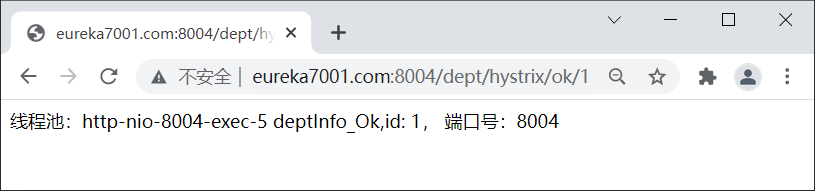
图2：Hystrix 正常服务案例
图2：Hystrix 正常服务案例
8. 使用浏览器访问“http://eureka7001.com:8004/dept/hystrix/timeout/1”，结果如下图。
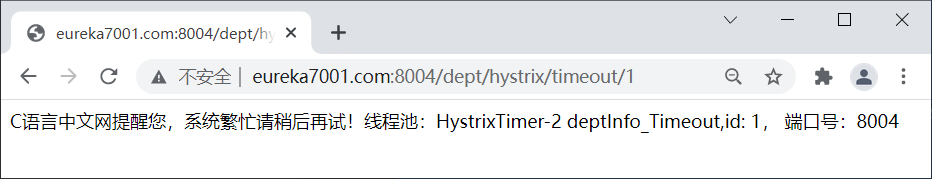
图3：Hystrix 服务端服务降级
图3：Hystrix 服务端服务降级
客户端服务降级
通常情况下，我们都会在客户端进行服务降级，当客户端调用的服务端的服务不可用时，客户端直接进行服务降级处理，避免其线程被长时间、不必要地占用。客户端服务降级步骤如下。
1. 在 micro-service-cloud-consumer-dept-feign 的 pom.xml 中添加 Hystrix 的依赖，代码如下。
<!--hystrix 依赖-->
<dependency>
<groupId>org.springframework.cloud</groupId>
<artifactId>spring-cloud-starter-netflix-hystrix</artifactId>
</dependency>
2. 在 micro-service-cloud-consumer-dept-feign 的 application.yml 中添加以下配置，开启客户端的 Hystrix 功能。
feign:
hystrix:
enabled: true #开启客户端 hystrix
3. 在 net.biancheng.c.service 包下，创建一个名为 DeptHystrixService 的服务绑定接口，与 micro-service-cloud-provider-dept-hystrix-8004 中提供的服务接口进行绑定，代码如下。
package net.biancheng.c.service;
import org.springframework.cloud.openfeign.FeignClient;
import org.springframework.stereotype.Component;
import org.springframework.web.bind.annotation.PathVariable;
import org.springframework.web.bind.annotation.RequestMapping;
@Component
@FeignClient(value = "MICROSERVICECLOUDPROVIDERDEPTHYSTRIX")
public interface DeptHystrixService {
@RequestMapping(value = "/dept/hystrix/ok/{id}")
public String deptInfo_Ok(@PathVariable("id") Integer id);
@RequestMapping(value = "/dept/hystrix/timeout/{id}")
public String deptInfo_Timeout(@PathVariable("id") Integer id);
}
4. 在 net.biancheng.c.controller 包下创建一个名为 HystrixController_Consumer 的 Controller ，代码如下。
package net.biancheng.c.controller;
import com.netflix.hystrix.contrib.javanica.annotation.DefaultProperties;
import com.netflix.hystrix.contrib.javanica.annotation.HystrixCommand;;
import lombok.extern.slf4j.Slf4j;
import net.biancheng.c.service.DeptHystrixService;
import org.springframework.web.bind.annotation.PathVariable;
import org.springframework.web.bind.annotation.RequestMapping;
import org.springframework.web.bind.annotation.RestController;
import javax.annotation.Resource;
@Slf4j
@RestController
public class HystrixController_Consumer {
@Resource
private DeptHystrixService deptHystrixService;
@RequestMapping(value = "/consumer/dept/hystrix/ok/{id}")
public String deptInfo_Ok(@PathVariable("id") Integer id) {
return deptHystrixService.deptInfo_Ok(id);
}
//在客户端进行降级
@RequestMapping(value = "/consumer/dept/hystrix/timeout/{id}")
@HystrixCommand(fallbackMethod = "dept_TimeoutHandler") //为该请求指定专属的回退方法
public String deptInfo_Timeout(@PathVariable("id") Integer id) {
String s = deptHystrixService.deptInfo_Timeout(id);
log.info(s);
return s;
}
// deptInfo_Timeout方法的 专用 fallback 方法
public String dept_TimeoutHandler(@PathVariable("id") Integer id) {
log.info("deptInfo_Timeout 出错，服务已被降级！");
return "C语言中文网提醒您：服务端系统繁忙，请稍后再试！（客户端 deptInfo_Timeout 专属的回退方法触发）";
}
}
5. 在配置文件 appliction.yml 中添加以下配置，在客户端配置请求超时的时间。
######################### Ribbon 客户端超时控制 ###################################
ribbon:
ReadTimeout: 6000 #建立连接所用的时间，适用于网络状况正常的情况下，两端两端连接所用的时间
ConnectionTimeout: 6000 #建立连接后，服务器读取到可用资源的时间
######################配置请求超时时间##########################
hystrix:
command:
default:
execution:
isolation:
thread:
timeoutInMilliseconds: 7000
####################配置具体方法超时时间 为 3 秒########################
DeptHystrixService#deptInfo_Timeout(Integer):
execution:
isolation:
thread:
timeoutInMilliseconds: 3000
在配置文件中设计请求的超时时间时，需要注意以下 2 点：
1）Hystrix 可以来为所有请求（方法）设置超时时间（单位为毫秒），若请求超时则触发全局的回退方法进行处理。
hystrix.command.default.execution.isolation.thread.timeoutInMilliseconds=mmm
2）Hystrix 还可以为某个特定的服务请求（方法）设置超时时间，格式如下：
hystrix.command.xxx#yyy(zzz).execution.isolation.thread.timeoutInMilliseconds=mmm格式说明如下：
- xxx：为包含该服务方法的类的名称（通常为服务绑定接口的名称），例如 DeptHystrixService 接口。
- yyy：服务方法名，例如 deptInfo_Timeout() 方法。
- zzz：方法内的参数类型，例如 Integer、String 等等
- mmm：要设置的超时时间，单位为毫秒（1 秒 =1000 毫秒）
6. 在 micro-service-cloud-consumer-dept-feign 的主启动类上，使用 @EnableHystrix 注解开启客户端 Hystrix 功能，代码如下。
package net.biancheng.c;
import org.springframework.boot.SpringApplication;
import org.springframework.boot.autoconfigure.SpringBootApplication;
import org.springframework.cloud.netflix.hystrix.EnableHystrix;
import org.springframework.cloud.openfeign.EnableFeignClients;
@SpringBootApplication
@EnableFeignClients //开启 OpenFeign 功能
@EnableHystrix //启用 Hystrix
public class MicroServiceCloudConsumerDeptFeignApplication {
public static void main(String[] args) {
SpringApplication.run(MicroServiceCloudConsumerDeptFeignApplication.class, args);
}
}
7. 修改 micro-service-cloud-provider-dept-hystrix-8004 中 DeptServiceImpl 的代码，将 deptInfo_Timeout() 方法的运行时间修改为 4 秒（小于超时时间 5 秒），以保证服务端请求正常不被降级，代码如下。
//一旦该方法失败并抛出了异常信息后，会自动调用 @HystrixCommand 注解标注的 fallbackMethod 指定的方法
@HystrixCommand(fallbackMethod = "dept_TimeoutHandler",
commandProperties =
//规定 5 秒钟以内就不报错，正常运行，超过 5 秒就报错，调用指定的方法
{@HystrixProperty(name = "execution.isolation.thread.timeoutInMilliseconds", value = "5000")})
@Override
public String deptInfo_Timeout(Integer id) {
int outTime = 4;
try {
TimeUnit.SECONDS.sleep(outTime);
} catch (InterruptedException e) {
e.printStackTrace();
}
return "线程池：" + Thread.currentThread().getName() + " deptInfo_Timeout,id: " + id + " 耗时: " + outTime;
}
8. 重启 micro-service-cloud-provider-dept-hystrix-8004 和 micro-service-cloud-consumer-dept-feign，使用浏览器访问“http://eureka7001.com:8004/dept/hystrix/timeout/1”，直接调用服务端的 deptInfo_Timeout() 方法，结果如下图。
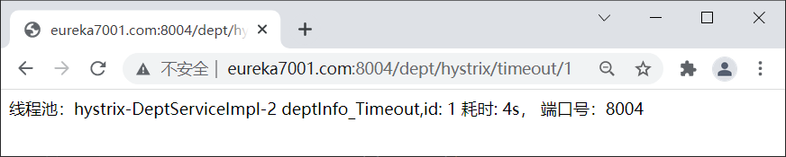
图4：Hystrix 服务端请求正常
图4：Hystrix 服务端请求正常
9. 使用浏览器访问“http://eureka7001.com/consumer/dept/hystrix/timeout/1”，结果如下图。
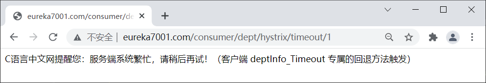
图5：Hystrix 客户端服务降级
图5：Hystrix 客户端服务降级
由图 5 可以看出，由于服务请求的耗时为 4 秒，超过了客户端为该请求指定的超时时间 （3 秒 ），因此该服务被降级处理，触发了其指定的回退方法。
全局降级方法
通过上面的方式实现服务降级时，需要针对所有业务方法都配置降级方法，这极有可能会造成代码的急剧膨胀。为了解决该问题，我们还可以为所有业务方法指定一个全局的回退方法，具体步骤如下。1. 在 HystrixController_Consumer 的类名上标注 @DefaultProperties 注解，并通过其 defaultFallback 属性指定一个全局的降级方法，代码如下。
@Slf4j
@RestController
@DefaultProperties(defaultFallback = "dept_Global_FallbackMethod") //全局的服务降级方法
public class HystrixController_Consumer {
……
}
2. 在 HystrixController_Consumer 中，创建一个名为 dept_Global_FallbackMethod 的全局回方法，代码如下。
/**
* 全局的 fallback 方法，
* 回退方法必须和 hystrix 的执行方法在相同类中
* @DefaultProperties(defaultFallback = "dept_Global_FallbackMethod") 类上注解，请求方法上使用 @HystrixCommand 注解
*/
public String dept_Global_FallbackMethod() {
return "C语言中文网提醒您，运行出错或服务端系统繁忙，请稍后再试！（客户端全局回退方法触发,）";
}
3. 在所有的业务方法上都标注 @HystrixCommand 注解，这里我们将 deptInfo_Timeout() 方法上的 @HystrixCommand(fallbackMethod = "dept_TimeoutHandler") 修改为 @HystrixCommand 即可，代码如下。注意：降级（FallBack）方法必须与其对应的业务方法在同一个类中，否则无法生效。
//在客户端进行降级
@RequestMapping(value = "/consumer/dept/hystrix/timeout/{id}")
@HystrixCommand
public String deptInfo_Timeout(@PathVariable("id") Integer id) {
String s = deptHystrixService.deptInfo_Timeout(id);
log.info(s);
return s;
}
4. 重启 micro-service-cloud-consumer-dept-feign，使用浏览器访问“http://eureka7001.com/consumer/dept/hystrix/timeout/1”，结果如下图。注意：全局降级方法的优先级较低，只有业务方法没有指定其降级方法时，服务降级时才会触发全局回退方法。若业务方法指定它自己的回退方法，那么在服务降级时，就只会直接触发它自己的回退方法，而非全局回退方法。
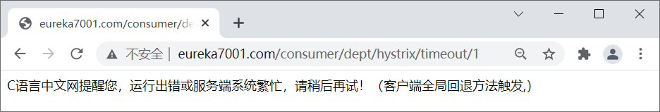
图6：全局回退方法
图6：全局回退方法
解耦降级逻辑
不管是业务方法指定的降级方法还是全局降级方法，它们都必须和业务方法在同一个类中才能生效，业务逻辑与降级逻辑耦合度极高。下面我们对业务逻辑与降级逻辑进行解耦，操作步骤如下。
1. 在 micro-service-cloud-consumer-dept-feign 的 net.biancheng.c.service 包下，新建 DeptHystrixService 接口的实现类 DeptHystrixFallBackService，统一为 DeptHystrixService 中的方法提供服务降级处理 ，代码如下。
package net.biancheng.c.service;
import org.springframework.stereotype.Component;
/**
* Hystrix 服务降级
* 解耦回退逻辑
*/
@Component
public class DeptHystrixFallBackService implements DeptHystrixService {
@Override
public String deptInfo_Ok(Integer id) {
return "--------------------C语言中文网提醒您，系统繁忙，请稍后重试！（解耦回退方法触发）-----------------------";
}
@Override
public String deptInfo_Timeout(Integer id) {
return "--------------------C语言中文网提醒您，系统繁忙，请稍后重试！（解耦回退方法触发）-----------------------";
}
}
2. 在服务绑定接口 DeptHystrixService 标注的 @FeignClient 注解中添加 fallback 属性，属性值为 DeptHystrixFallBackService.class，代码如下。注意：该类必须以组件的形式添加 Spring 容器中才能生效，最常用的方式就是在类上标注 @Component 注解。
package net.biancheng.c.service;
import org.springframework.cloud.openfeign.FeignClient;
import org.springframework.stereotype.Component;
import org.springframework.web.bind.annotation.PathVariable;
import org.springframework.web.bind.annotation.RequestMapping;
@Component
@FeignClient(value = "MICROSERVICECLOUDPROVIDERDEPTHYSTRIX", fallback = DeptHystrixFallBackService.class)
public interface DeptHystrixService {
@RequestMapping(value = "/dept/hystrix/ok/{id}")
public String deptInfo_Ok(@PathVariable("id") Integer id);
@RequestMapping(value = "/dept/hystrix/timeout/{id}")
public String deptInfo_Timeout(@PathVariable("id") Integer id);
}
3. 重启 micro-service-cloud-consumer-dept-feign，然后关闭服务端 micro-service-cloud-provider-dept-hystrix-8004，使用浏览器访问“http://eureka7001.com/consumer/dept/hystrix/ok/1”，结果如下图。
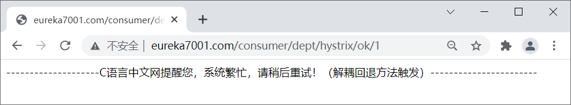
图7：Hystrix 解耦回退方法
图7：Hystrix 解耦回退方法
Hystrix 服务熔断
熔断机制是为了应对雪崩效应而出现的一种微服务链路保护机制。当微服务系统中的某个微服务不可用或响应时间太长时，为了保护系统的整体可用性，熔断器会暂时切断请求对该服务的调用，并快速返回一个友好的错误响应。这种熔断状态不是永久的，在经历了一定的时间后，熔断器会再次检测该微服务是否恢复正常，若服务恢复正常则恢复其调用链路。
熔断状态
在熔断机制中涉及了三种熔断状态：- 熔断关闭状态（Closed）：当服务访问正常时，熔断器处于关闭状态，服务调用方可以正常地对服务进行调用。
- 熔断开启状态（Open）：默认情况下，在固定时间内接口调用出错比率达到一个阈值（例如 50%），熔断器会进入熔断开启状态。进入熔断状态后，后续对该服务的调用都会被切断，熔断器会执行本地的降级（FallBack）方法。
- 半熔断状态（Half-Open）： 在熔断开启一段时间之后，熔断器会进入半熔断状态。在半熔断状态下，熔断器会尝试恢复服务调用方对服务的调用，允许部分请求调用该服务，并监控其调用成功率。如果成功率达到预期，则说明服务已恢复正常，熔断器进入关闭状态；如果成功率仍旧很低，则重新进入熔断开启状态。
三种熔断状态之间的转化关系如下图：
图8：三种熔断状态转换
Hystrix 实现熔断机制
在 Spring Cloud 中，熔断机制是通过 Hystrix 实现的。Hystrix 会监控微服务间调用的状况，当失败调用到一定比例时（例如 5 秒内失败 20 次），就会启动熔断机制。Hystrix 实现服务熔断的步骤如下：
- 当服务的调用出错率达到或超过 Hystix 规定的比率（默认为 50%）后，熔断器进入熔断开启状态。
- 熔断器进入熔断开启状态后，Hystrix 会启动一个休眠时间窗，在这个时间窗内，该服务的降级逻辑会临时充当业务主逻辑，而原来的业务主逻辑不可用。
- 当有请求再次调用该服务时，会直接调用降级逻辑快速地返回失败响应，以避免系统雪崩。
- 当休眠时间窗到期后，Hystrix 会进入半熔断转态，允许部分请求对服务原来的主业务逻辑进行调用，并监控其调用成功率。
- 如果调用成功率达到预期，则说明服务已恢复正常，Hystrix 进入熔断关闭状态，服务原来的主业务逻辑恢复；否则 Hystrix 重新进入熔断开启状态，休眠时间窗口重新计时，继续重复第 2 到第 5 步。
示例
下面我们就通过一个实例来验证下 Hystrix 是如何实现熔断机制的。1. 在 micro-service-cloud-provider-dept-hystrix-8004 中的 DeptService 接口中添加一个 deptCircuitBreaker() 方法，代码如下。
package net.biancheng.c.service;
public interface DeptService {
// hystrix 熔断器示例 ok
public String deptInfo_Ok(Integer id);
//hystrix 熔断器超时案例
public String deptInfo_Timeout(Integer id);
// Hystrix 熔断机制案例
public String deptCircuitBreaker(Integer id);
}
2. 在 DeptService 接口的实现类 DeptServiceImpl 添加 deptCircuitBreaker() 的方法实现及其回退方法，代码如下。
//Hystrix 熔断案例
@Override
@HystrixCommand(fallbackMethod = "deptCircuitBreaker_fallback", commandProperties = {
//以下参数在 HystrixCommandProperties 类中有默认配置
@HystrixProperty(name = "circuitBreaker.enabled", value = "true"), //是否开启熔断器
@HystrixProperty(name = "metrics.rollingStats.timeInMilliseconds",value = "1000"), //统计时间窗
@HystrixProperty(name = "circuitBreaker.requestVolumeThreshold", value = "10"), //统计时间窗内请求次数
@HystrixProperty(name = "circuitBreaker.sleepWindowInMilliseconds", value = "10000"), //休眠时间窗口期
@HystrixProperty(name = "circuitBreaker.errorThresholdPercentage", value = "60"), //在统计时间窗口期以内，请求失败率达到 60% 时进入熔断状态
})
public String deptCircuitBreaker(Integer id) {
if (id < 0) {
//当传入的 id 为负数时，抛出异常，调用降级方法
throw new RuntimeException("c语言中文网提醒您，id 不能是负数！");
}
String serialNum = IdUtil.simpleUUID();
return Thread.currentThread().getName() + "\t" + "调用成功，流水号为：" + serialNum;
}
//deptCircuitBreaker 的降级方法
public String deptCircuitBreaker_fallback(Integer id) {
return "c语言中文网提醒您，id 不能是负数,请稍后重试!\t id:" + id;
}
在以上代码中，共涉及到了 4 个与 Hystrix 熔断机制相关的重要参数，这 4 个参数的含义如下表。
| 参数 | 描述 |
|---|---|
| metrics.rollingStats.timeInMilliseconds | 统计时间窗。 |
| circuitBreaker.sleepWindowInMilliseconds | 休眠时间窗，熔断开启状态持续一段时间后，熔断器会自动进入半熔断状态，这段时间就被称为休眠窗口期。 |
| circuitBreaker.requestVolumeThreshold |
请求总数阀值。 在统计时间窗内，请求总数必须到达一定的数量级，Hystrix 才可能会将熔断器打开进入熔断开启转态，而这个请求数量级就是 请求总数阀值。Hystrix 请求总数阈值默认为 20，这就意味着在统计时间窗内，如果服务调用次数不足 20 次，即使所有的请求都调用出错，熔断器也不会打开。 |
| circuitBreaker.errorThresholdPercentage |
错误百分比阈值。 当请求总数在统计时间窗内超过了请求总数阀值，且请求调用出错率超过一定的比例，熔断器才会打开进入熔断开启转态，而这个比例就是错误百分比阈值。错误百分比阈值设置为 50，就表示错误百分比为 50%，如果服务发生了 30 次调用，其中有 15 次发生了错误，即超过了 50% 的错误百分比，这时候将熔断器就会打开。 |
3. 在 DeptController 中添加一个 deptCircuitBreaker() 方法对外提供服务，代码如下。
// Hystrix 服务熔断
@RequestMapping(value = "/dept/hystrix/circuit/{id}")
public String deptCircuitBreaker(@PathVariable("id") Integer id){
String result = deptService.deptCircuitBreaker(id);
log.info("result:"+result);
return result;
}
4. 重启 micro-service-cloud-provider-dept-hystrix-8004，使用浏览器访问“http://eureka7001.com:8004/dept/hystrix/circuit/1”，结果如下图。
图9：Hystrix 实现熔断机制 调用正确示例
5. 浏览器多次（调用次数大于请求总数阀值）访问“http://eureka7001.com:8004/dept/hystrix/circuit/-2”，使调用出错率大于错误百分比阀值，结果下图。
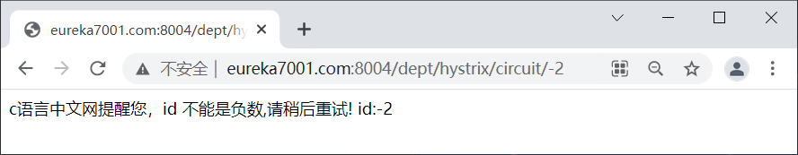
图10：Hystrix 实现熔断机制 错误调用
图10：Hystrix 实现熔断机制 错误调用
6. 重新将参数修改为正数（例如参数为 3），使用浏览器访问“http://eureka7001.com:8004/dept/hystrix/circuit/3”，结果如下图。
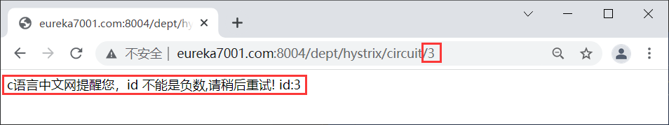
图11：Hystrix 熔断开启状态传入正数
图11：Hystrix 熔断开启状态传入正数
通过图 11 可以看到，在熔断开启状态下，即使我们传入的参数已经是正数，调用的依然降级逻辑。
7. 继续连续访问“http://eureka7001.com:8004/dept/hystrix/circuit/3”，结果下图。
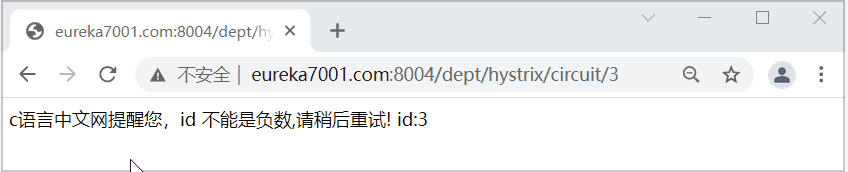
图12：Hystrix 进入熔断关闭状态
图12：Hystrix 进入熔断关闭状态
通过图 12 可以看出，当服务调用正确率上升到一定的利率后，Hystrix 进入熔断关闭状态。
Hystrix 故障监控
Hystrix 还提供了准实时的调用监控（Hystrix Dashboard）功能，Hystrix 会持续地记录所有通过 Hystrix 发起的请求的执行信息，并以统计报表的形式展示给用户，包括每秒执行请求的数量、成功请求的数量和失败请求的数量等。下面我们就通过一个实例来搭建 Hystrix Dashboard，监控 micro-service-cloud-provider-dept-hystrix-8004 的运行情况。
1. 在父工程下新建一个名为 micro-service-cloud-consumer-dept-hystrix-dashboard-9002 的子模块，并在其 pom.xml 中添加以下依赖。
<?xml version="1.0" encoding="UTF-8"?>
<project xmlns="http://maven.apache.org/POM/4.0.0" xmlns:xsi="http://www.w3.org/2001/XMLSchema-instance"
xsi:schemaLocation="http://maven.apache.org/POM/4.0.0 https://maven.apache.org/xsd/maven-4.0.0.xsd">
<modelVersion>4.0.0</modelVersion>
<parent>
<artifactId>spring-cloud-demo2</artifactId>
<groupId>net.biancheng.c</groupId>
<version>0.0.1-SNAPSHOT</version>
</parent>
<groupId>net.biancheng.c</groupId>
<artifactId>micro-service-cloud-consumer-dept-hystrix-dashboard-9002</artifactId>
<version>0.0.1-SNAPSHOT</version>
<name>micro-service-cloud-consumer-dept-hystrix-dashboard-9002</name>
<description>Demo project for Spring Boot</description>
<properties>
<java.version>1.8</java.version>
</properties>
<dependencies>
<dependency>
<groupId>org.springframework.boot</groupId>
<artifactId>spring-boot-starter</artifactId>
</dependency>
<!--Spring Boot 测试依赖-->
<dependency>
<groupId>org.springframework.boot</groupId>
<artifactId>spring-boot-starter-test</artifactId>
<scope>test</scope>
</dependency>
<!--hystrix-dashboard 监控的依赖-->
<dependency>
<groupId>org.springframework.cloud</groupId>
<artifactId>spring-cloud-starter-netflix-hystrix-dashboard</artifactId>
</dependency>
<!--添加 Spring Boot 的监控模块-->
<dependency>
<groupId>org.springframework.boot</groupId>
<artifactId>spring-boot-starter-actuator</artifactId>
</dependency>
<dependency>
<groupId>org.springframework.boot</groupId>
<artifactId>spring-boot-devtools</artifactId>
</dependency>
<dependency>
<groupId>org.projectlombok</groupId>
<artifactId>lombok</artifactId>
</dependency>
</dependencies>
<build>
<plugins>
<plugin>
<groupId>org.springframework.boot</groupId>
<artifactId>spring-boot-maven-plugin</artifactId>
</plugin>
</plugins>
</build>
</project>
2. 在 micro-service-cloud-consumer-dept-hystrix-dashboard-9002 的 application.yml 中添加以下配置。
server:
port: 9002 #端口号
#http://eureka7001.com:9002/hystrix 熔断器监控页面
# localhost:8004//actuator/hystrix.stream 监控地址
hystrix:
dashboard:
proxy-stream-allow-list:
- "localhost"
3. 在 micro-service-cloud-consumer-dept-hystrix-dashboard-9002 的主启动类上添加 @EnableHystrixDashboard 注解，开启 Hystrix 监控功能，代码如下。
package net.biancheng.c;
import org.springframework.boot.SpringApplication;
import org.springframework.boot.autoconfigure.SpringBootApplication;
import org.springframework.cloud.netflix.hystrix.dashboard.EnableHystrixDashboard;
@SpringBootApplication
@EnableHystrixDashboard
public class MicroServiceCloudConsumerDeptHystrixDashboard9002Application {
public static void main(String[] args) {
SpringApplication.run(MicroServiceCloudConsumerDeptHystrixDashboard9002Application.class, args);
}
}
4. 在 micro-service-cloud-provider-dept-hystrix-8004 的 net.biancheng.c.config 包下，创建一个名为 HystrixDashboardConfig 的配置类，代码如下。
package net.biancheng.c.config;
import com.netflix.hystrix.contrib.metrics.eventstream.HystrixMetricsStreamServlet;
import org.springframework.boot.web.servlet.ServletRegistrationBean;
import org.springframework.context.annotation.Bean;
import org.springframework.context.annotation.Configuration;
@Configuration
public class HystrixDashboardConfig {
/**
* Hystrix dashboard 监控界面必须配置
* @return
*/
@Bean
public ServletRegistrationBean getServlet() {
HystrixMetricsStreamServlet streamServlet = new HystrixMetricsStreamServlet();
ServletRegistrationBean registrationBean = new ServletRegistrationBean(streamServlet);
registrationBean.setLoadOnStartup(1);
registrationBean.addUrlMappings("/actuator/hystrix.stream");//访问路径
registrationBean.setName("hystrix.stream");
return registrationBean;
}
}
5. 启动 micro-service-cloud-consumer-dept-hystrix-dashboard-9002，使用浏览器访问“http://eureka7001.com:9002/hystrix”，结果如下图。
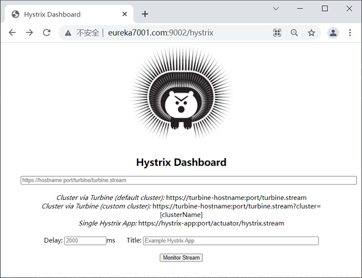
图13：Hystrix 监控页面
图13：Hystrix 监控页面
6. 重启 micro-service-cloud-provider-dept-hystrix-8004，并将以下信息填到 Hystrix 监控页面中，如下图。
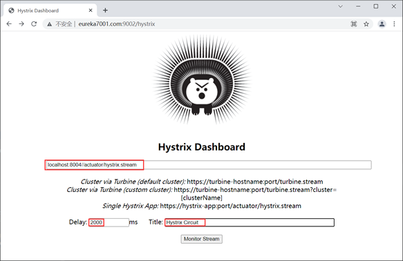
图14：Hystrix 监控信息
图14：Hystrix 监控信息
7. 点击下方的 Monitor Stream 按钮，跳转到 Hystrix 对 micro-service-cloud-provider-dept-hystrix-8004 的监控页面，如下图。
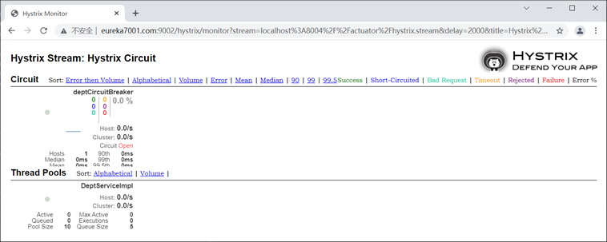
图15：Hystrix 监控微服务运行情况
图15：Hystrix 监控微服务运行情况
8. 使用浏览器多次访问“http://eureka7001.com:8004/dept/hystrix/circuit/1”和 “http://eureka7001.com:8004/dept/hystrix/circuit/-1”，查看 Hystrix 监控页面，如下图。
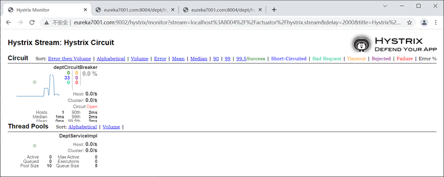
图16：Hystrix 监控服务运行情况
图16：Hystrix 监控服务运行情况
关注公众号「站长严长生」，在手机上阅读所有教程，随时随地都能学习。内含一款搜索神器，免费下载全网书籍和视频。

微信扫码关注公众号